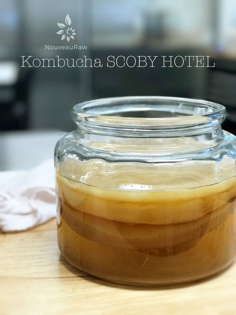

#9 – Kombucha SCOBY HOTEL
 Every time fresh sweet tea is added to a batch of kombucha, a new SCOBY is be born. Break out the streamers! This new growth can be peeled off and shared with a friend, or it can book a room at the prestigious SCOBY HOTEL. :) Think of a SCOBY HOTEL as a boutique hotel, small and quaint, one that holds roughly 12 “guests.”
Every time fresh sweet tea is added to a batch of kombucha, a new SCOBY is be born. Break out the streamers! This new growth can be peeled off and shared with a friend, or it can book a room at the prestigious SCOBY HOTEL. :) Think of a SCOBY HOTEL as a boutique hotel, small and quaint, one that holds roughly 12 “guests.”
I run my own continuous brew system, so the SCOBYs are literary stacking up. I typically leave about 2-inches worth in my main brewing vessel, beyond that, I start to separate them, placing the extras in my SCOBY HOTEL You don’t have to create a hotel; perhaps you have a ton of friends who would love a gift comprised a big slimy blob of bacteria that was put here to take over the world! lol
There are other uses for SCOBYs; they can be dehydrated for dog treats, given raw to chickens to peck at, and you can cut them up and put small pieces in a smoothie. I have read where some people have dehydrated them into fruit leather or teriyaki jerky. They can also be blended into a gel, and used as a face gel. People have been pretty darn creative with SCOBYs.
As my hotel grows, I will be sure to post more photos. I started using them in other applications and failed to get a picture that shows you how they stacked up. The hotel in the photo to the right here has three of them in there.
Why do I create a SCOBY Hotel?
- In kombucha brewing, a failure could potentially lead to the loss of your beloved SCOBY, so having extras waiting on the sideline will keep you in the brewing business.
- SCOBY cultures do age and lose their vitality, at this point in their life it’s time for retirement and shuffleboard games.
- You can use extra SCOBYs to experiment with, try new teas or sweeteners without the fear of losing your SCOBY.
- By having extras sitting on the sideline, you can swap out your old SCOBY for a new healthy SCOBY so you can carry on brewing tradition.
- Perhaps you need to take a break from kombucha brewing (vacation, too busy, etc.) Placing the SCOBY in a hotel allows you to pause your production for a few days, weeks, or months.
- Sometimes older SCOBYs start to fade, ah the cycle of life as we know it. Typically people will get roughly 10-15 brew cycles out of a SCOBY before it starts to fade. But I have heard stories where some have used the same SCOBY for years. I want to meet that SCOBY and shake its hand. hehe
How to build a SCOBY HOTEL

Hotel Vessel: (let’s create a 5-star hotel)
- The hotel vessel should be the same circumference as the vessel in which you use to brew. That way when you need to use a SCOBY, it will fit nicely into your regular brewing container. But don’t worry if you have to use a differently sized hotel vessel, they will still do ok, even if you have to fold them.
- Thoroughly clean your glass hotel vessel with warm water and soap. Rinse well, and rinse it one more time with white vinegar to help remove any leftover soap residue. Do not use antibacterial soap because it can damage the bacteria within the SCOBY.
Create a sweet tea base:
- The SCOBYs need to be entirely covered by a strong sweet tea base, (either black tea or green tea), to ensure they have adequate nutrients available to them while in storage.
- Create a 50/50 (1/2 fermented kombucha liquid & 1/2 sweet tea) base for the SCOBYs to hang out in.
- Pour 2″ of the solution into the jar, add the SCOBY(s), and then add the rest of the liquid. There should be at least twice as much liquid in the jar as SCOBY mass.
- Cover the jar as you normally would when brewing kombucha, and secure the material around the top of the jar with a tight rubber band. After a couple of weeks, replace the breathable covering with a plastic lid, this will cause the SCOBYs to fall into a deep sleep.
Where to Store the Hotel:
- Keep it out of the direct light (pantry, cupboard)
- Select a cool spot, preferably 50– 55 degrees (F)
- Keep it away from garbage, smoke, fruits, or plants to avoid mold infestation. If this happens, bring in the demolition team and tear that hotel down! Meaning… toss it all.
- Avoid exposure to airborne contaminants, bugs, or other foods that you may be fermenting.
- If you are entertaining and everyone looks a little bored, bring out the SCOBY hotel and place it on the coffee table, it makes for some interesting conversations. You can then take on the persona of a mad scientist growing strange creatures in your laboratory. Mahahaha-ha!
Feedings:
- The SCOBY HOTEL will need to be fed; the time frame depends on the temperature in where they are kept and how many are in there. Failure in refeeding the SCOBY HOTEL can starve the SCOBYs, causing them to pass away. :(
- 50-55 degrees (F) feed every 2-3 months
- 70-80 degrees (F) feed every 6-8 weeks.
- Create a sweet tea base (just as would when brewing) and pour it in, making sure to keep the liquid at least a few inches above the SCOBYs. It can be more, just not less. The tea will supply the needed nutrients to keep the SCOBYs healthy and vibrant.
Hotel Maintenance:
There’s no getting around it, everything in life requires a cleaning now and then. :) Cleaning the vessel ought to be done every two months. If you are in the routine of re-feeding your hotel every 2-3 months, this might be a good time to go ahead and give it a clean.
- Brew a batch of sweet tea and let it cool.
- Remove the SCOBYs from the hotel, and place them in a glass bowl filled with enough kombucha to cover them. Feel free to rinse an excess brown yeast strings from the SCOBYs before placing them in the bowl. Cover the bowl, so airborne creatures don’t land in it.
- Filter the hotel’s liquid through a strainer into another glass container to remove excess yeast strands and any dead material which may have collected at the bottom of the hotel vessel.
- Combine the strained liquid, with the sweet tea, mixing it 50/50. This will be what you refill the hotel with.
- Wash the hotel vessel with hot soapy water, giving it a final rinse with vinegar.
- Pour half of the sweet tea solution in the container, return the SCOBYs, and pour the remaining liquid over the top of them.
- Secure the breathable covering back on top the vessel and place back in storage.
- Replace the cloth lid with a plastic lid within a couple of weeks.
- If you notice that the hotel liquid is getting low, just add more sweet tea or pre-made kombucha.
So you want more SCOBYs huh?
It is possible to use your SCOBY HOTEL as a place to create even more SCOBYs! Yes, folks, it’s true! Once you have built the hotel, cover with a cloth and tight rubber band. This will mimic the actual brewing session and cause a new SCOBY to form at the very top of the liquid. This is good because it will create a seal, protecting the SCOBYs down below. It will also help lock in the liquid and slow down evaporation. To keep creating SCOBYs, just remove the lid and push the formed SCOBY down into the liquid. Place the cloth and rubber band back on top and leave it be. Remember, any time you disturb the top, a new SCOBY starts to form. Pretty amazing, huh?!

What is Kombucha?
Kombucha Continuous Brew Method
Kombucha Maintenance of Continuous Brew
Kombucha – Equipment Needed
Kombucha – Ingredients Needed
Kombucha SCOBY – Growing from Scratch
Testing Sugar Levels in Kombucha
Bottling Kombucha from a Continuous Brew
Second Fermentation of Kombucha – Adding Flavor & Effervescence
Kombucha Aesthetics
© AmieSue.com